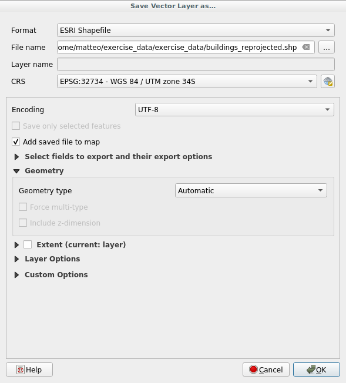
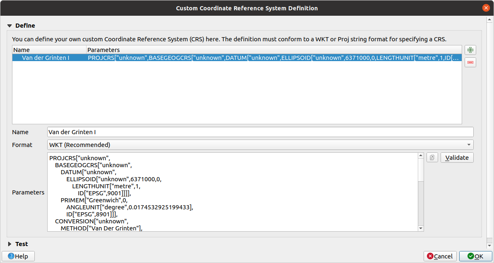
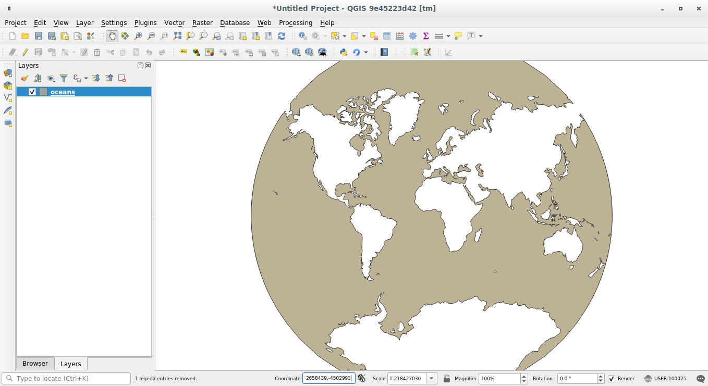

重要
翻訳は あなたが参加できる コミュニティの取り組みです。このページは現在 100.00% 翻訳されています。
6.1. レッスン: データを再投影および変換する
ここでもう一度、座標参照系(CRS)の話をしましょう。以前にも少し触れたことがありますが、実用上どのような意味があるのかについては触れていませんでした。
このレッスンの目標: ベクターデータセットの再投影および変換をします。
6.1.1. ★☆☆ （初級レベル） 理解しよう: 投影法
この時点で全てのデータと地図自体のあるCRSは、 WGS84 と呼ばれています。これは、データを表現するためのとても一般的な地理座標系(GCS)です。しかし、これから見ていくように問題があります。
現在の地図を保存してください
次に、
exercise_data/world/world.qgsの下にある世界地図を開いてください拡大 ツールを使って南アフリカを拡大表示します
画面下の ステータスバー にある 縮尺 フィールドにスケールを設定してみてください。南アフリカの上で、この値を
1:5 000 000（1対500万）に設定してください。縮尺 フィールドを見ながら、マップをパンします
スケールが変化していることに気づいたでしょうか？それは、画面の中心にある 1:5 000 000 でズームした1点から遠ざかっているからです。その点から離れたところでは、縮尺が異なります。
理由を理解するために、地球の球体を考えます。そこには北から南に複数の線が引かれています。これらの経線は、赤道では遠く離れていますが、極で出会っています。
GCSでは、この球体で作業をしているのですが、画面は平らです。球体を平面で表現しようとすると、テニスボールを切り開いて平らにしようとするのと同じような歪みが発生します。これは地図上では、経線は極点（合流するはずの場所）でも同じように離れていることを意味します。つまり、地図上で赤道から遠ざかるにつれて、見えるものの縮尺はどんどん大きくなっていくのです。このことは、現実的には、地図上に一定の縮尺が存在しないことを意味します！
この問題を解決するため、かわりに投影座標系（PCS）を使用してみましょう。PCSでは縮尺変更のための余裕を作り、それを修正する方法でデータを「投影」または変換します。そのため、一定の縮尺を維持するために、PCSを使用するために私たちのデータを投影変換する必要があります。
6.1.2. ★☆☆ （初級レベル） 理解しよう: 「オンザフライ」再投影
デフォルトでは、QGISはデータを「オンザフライ」で再投影します。この意味は、データそのものが別のCRSにある場合でも、QGISはそれを任意のCRSにあるかのように投影することができるということです。
QGISの右下にある  現在のCRS ボタンをクリックすることで、プロジェクトのCRSを変更することができます。
現在のCRS ボタンをクリックすることで、プロジェクトのCRSを変更することができます。
表示されたダイアログで、
globalという単語を フィルタ フィールドに入力します。その下の あらかじめ定義されたCRS フィールドに、いくつかの CRS が表示されるはずです。WGS 84 / NSIDC EASE-Grid 2.0 Global | EPSG:6933 のエントリをクリックして選択し、 OK をクリックします。
南アフリカの形状が変化することに注意してください。すべて投影法の変更によって地球の見た目としての形状が変わります。
前と同様に、
1:5 000 000の縮尺に拡大します。地図をパンニングします。
縮尺は同じままであることに注意します！
「オンザフライ」再投影は異なるCRSのデータセットを組み合わせて使う際にも用いられます。
南アフリカのデータのみを含む別のベクタレイヤを地図に追加します。これは
exercise_data/world/RSA.shpとして見つかります。それを読み込みます。そのCRSを見る簡単な方法は、凡例のレイヤにマウスカーソルを置くことです。それは
EPSG:3410です。何に気づきますか？
レイヤは continents と異なる CRS を持つ場合でも、表示されます。
6.1.3. ★★☆ （中級レベル） 理解しよう: 他のCRSへデータセットを保存する
時には、既存のデータセットを別の CRS でエクスポートする必要があります。次のレッスンで説明するように、レイヤ上で距離計算をする必要がある場合、投影座標系でレイヤを持つことが常に良いことです。
「オンザフライ」再投影は、プロジェクト に関連するものであり、単一のレイヤに関連するものではないことに注意し てください。つまり、レイヤを 正しい 位置で見たとしても、プロジェクトとは異なるCRSを持つことがあります。
レイヤを別のCRSでエクスポートすることが簡単にできます。
training_data.gpkgからbuildingsデータセットを追加しますレイヤ パネルで
buildingsレイヤを右クリックします表示されたメニューから を選択します。すると、 名前をつけてベクタレイヤを保存... ダイアログが表示されます。
ファイル名 フィールドの隣にある ブラウズ ボタンをクリックします
exercise_data/に移動して、新しいレイヤの名前をbuildings_reprojected.shpに指定します。CRS の値を変更します。最近使用されたCRSのみがドロップダウンメニューに表示されます。ドロップダウンメニューの横にある、
 CRSの選択 ボタンをクリックします。
CRSの選択 ボタンをクリックします。CRSの選択 ダイアログが表示されます。その Filterフィルタ フィールドで
34Sを検索します。リストから WGS 84 / UTM zone 34S | EPSG:32734 を選択します。

他のオプションは変えずにおきます。名前を付けてベクタレイヤを保存... ダイアログは次のようになります:
 OK をクリックします
これでレイヤの新旧の投影法を比較すると、2つの異なるCRSでありながら、重なっていることがわかります。
6.1.4. ★★★ （上級レベル） 理解しよう: 独自の投影法を作る
投影法はQGISにデフォルトで含まれるものよりも多くあります。独自の投影法も作成できます。
新しい地図を始めます
world/oceans.shpデータセットを読み込みますを実行すると、このようなダイアログが表示されます。
 CRSを追加 ボタンをクリックし、新しい投影法を作成します
CRSを追加 ボタンをクリックし、新しい投影法を作成します面白い投影法として
Van der Grinten Iというのがあります。その名前を 名前 フィールドに入力してください。他のほとんどの投影法がそうであるように、この投影法は、長方形のものの代わりに円形フィールドに地球を表します。
形式 で、 WKT（推奨） を選択します
パラメータ フィールドに次の文字列を追加します：
PROJCRS["unknown", BASEGEOGCRS["unknown", DATUM["unknown", ELLIPSOID["unknown",6371000,0, LENGTHUNIT["metre",1, ID["EPSG",9001]]]], PRIMEM["Greenwich",0, ANGLEUNIT["degree",0.0174532925199433], ID["EPSG",8901]]], CONVERSION["unknown", METHOD["Van Der Grinten"], PARAMETER["Longitude of natural origin",0, ANGLEUNIT["degree",0.0174532925199433], ID["EPSG",8802]], PARAMETER["False easting",0, LENGTHUNIT["metre",1], ID["EPSG",8806]], PARAMETER["False northing",0, LENGTHUNIT["metre",1], ID["EPSG",8807]]], CS[Cartesian,2], AXIS["(E)",east, ORDER[1], LENGTHUNIT["metre",1, ID["EPSG",9001]]], AXIS["(N)",north, ORDER[2], LENGTHUNIT["metre",1, ID["EPSG",9001]]]]
 OK をクリックします
ステータスバーの右側にある
現在のCRS ボタンをクリックし、プロジェクトの CRS を変更します新しく定義した投影法を選択します（ フィルタ フィールドでその名前を検索します）
この投影法を適用するため地図は再投影され、こうなります：

6.1.5. 結論
異なる投影法は、異なる目的のために有用です。正しい投影法を選択することにより、地図上の地物が正確に表現されていることを確認できます。
6.1.6. 参考文献
このレッスンの Advanced セクションの教材は、 この記事 から引用したものです。
Coordinate Reference Systems に関する詳細な情報はこちらをご覧ください。
6.1.7. 次は?
次のレッスンでは、QGISの様々なベクトル解析ツールを使って、ベクトルデータを解析する方法を学びます。